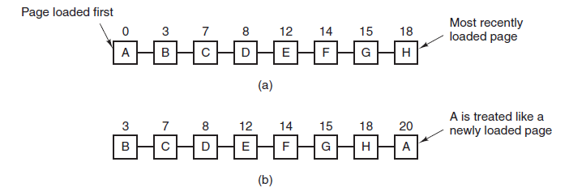

Second-Chance Page Replacement
A simple modification to FIFO that avoids the problem of throwing out a heavily used page is to inspect the R bit of the oldest page. If it is 0, the page is both old and unused, so it is replaced immediately. If the R bit is 1, the bit is cleared, the page is put onto the end of the list of pages, and its load time is updated as though it had just arrived in memory. Then the search continues.The operation of this algorithm, called second chance, is shown below. In first figure we see pages A through H kept on a linked list and sorted by the time they arrived in memory.

Second figure shows Page list if a page fault occurs at time 20 and A has its R bit set. The numbers above the pages are their load times.
Suppose that a page fault occurs at time 20. The oldest page is A, which arrived at time 0, when the process started. If A has the R bit cleared, it is evicted from memory, either by being written to the disk (if it is dirty), or just abandoned (if it is clean). On the other hand, if the R bit is set, A is put onto the end of the list and its load time is reset to the current time (20). The R bit is also cleared. The search for a suitable page continues with B.
What second chance is looking for is an old page that has not been referenced in the most recent clock interval. If all the pages have been referenced, second chance degenerates into pure FIFO. Specifically, imagine that all the pages in first figure have their R bits set. One by one, the operating system moves the pages to the end of the list, clearing the R bit each time it appends a page to the end of the list. Eventually, it comes back to page A, which now has its R bit cleared. At this point A is evicted. Thus the algorithm always terminates.